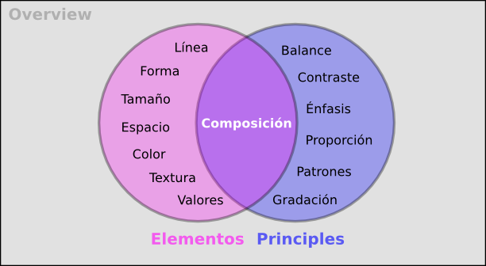
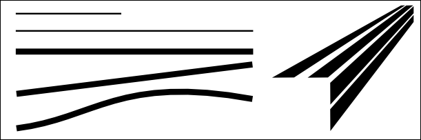
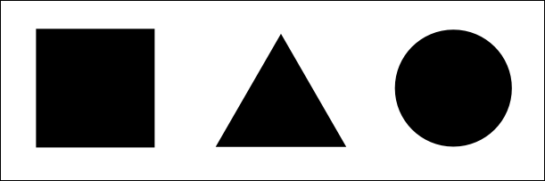
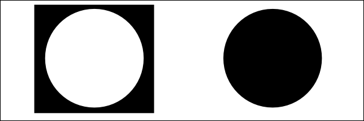
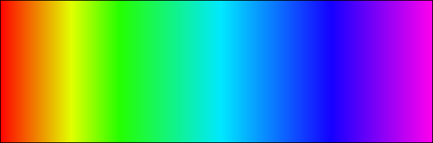
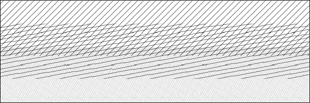
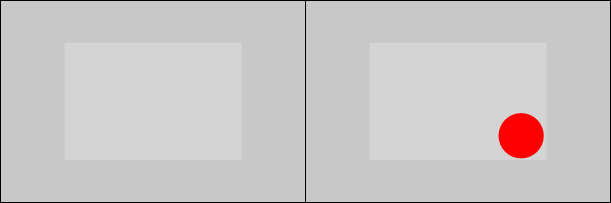
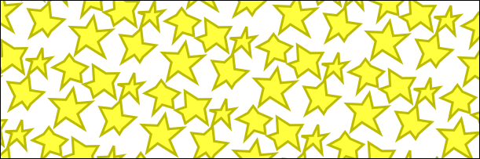
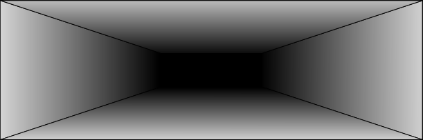
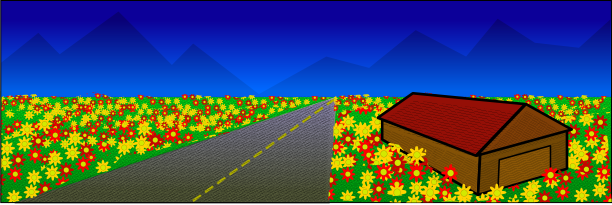

El programa que vamos a utilizar para gráficos vectoriales, Inkscape, viene con un gran introducción al algunos de los elementos de diseño que vamos a utilizar a lo largo de este curso. Utilización su licencia para redistribución, el texto completo se ha copiado a continuación. Tambien está disponible en el programa Inkscape haciendo clic en Ayuda -> Tutoriales -> Elementos de Diseño.

Los siguientes elementos son las bases que costruyen el Diseño.
Una línea es definida como una marca con longitud y dirección, creada mediante un punto que se mueve a lo largo de una superficie. Una línea puede variar en longitud, ancho, dirección, curvatura y color. La línea puede ser de dos dimensiones (una línea de lápiz sobre papel), o tres dimensiones implícitas.
Un fígura plana o una forma es creada cuando líneas actuales o implícitas se encuentran alrededor de un espacio. Un cambio en el color o el sombreado puede definir una forma. Las formas pueden ser clasificadas en varios tipos: geométricas (cuadrado, triángulo, círculo) y orgánicas (irregulares en contorno).
Este se refiere a las variaciones de las proporciones de los objetos, líneas o formas. Hay una variación de tamaño en objetos ya sean reales o imáginarios.

Espacio es el área vacia o abierta entre, alrededor, arriba, debajo o entre objetos. Figuras y formas son realizadas en el espacio alrededor y entre él. El espacio también es llamado bidimensional o tridimensional. El espacio positivo es rellenado con formas o fíguras. El espacio negativo rodea una forma o fígura.
El Color es el caracter percibido de una superficie de acuerdo con la longitud de onda o la luz reflejada desde esta. El Color posee tres dimensiones: TINTE (otra palabra para color, indicada por su nombre así como rojo o amarillo), VALOR (su luminosidad o oscuridad), INTENSIDAD (su brillo u opacidad).
La Textura es la forma como se siente la superficie (textura actual) o como puede ser observada (textura ímplicita). Las Texturas son descritas con palabras como áspero, sedoso o rugoso.
El Valor es que tan oscuro o claro se ve algo. Podemos alcanzar cambios de valores en el color por medio de la adición de blanco o negro a dicho color. Claroscuro usa valores en los dibujo mediante contrastes de claros y oscuros en una composición.

Los principios emplean elementos del diseño para crear composiciones.
El Balance es el sentido de equidad visual en una forma, fígura, valor, calor, etc. El Balance puede balancear simétricamente o uniformemente Objetos, valores, colores, texturas, formas, etc., igualmente puede ser usada en la creación de balances en la composición.

El contraste es la juxtaposición (fusión) de los elementos opuestos

El Énfasis es usado para crear ciertas partes de sus trabajos artísticos a través de llamado atención de manera especial. El centro de interés o punto foco es el lugar del dibujo que le invita a enfocar su mirada.
La Proporción describe el tamaño, ubicación o el monto de una cosa comparada con otra.

Los Patrones son creados mediante la repetición de un elemento (línea, forma o color) una y otra vez.
La Gradación es el tamaño y dirección producidas por una perspectiva lineal. La Gradación del color es desde gamas calidas a frías y por su parte los tonos oscuros a claros producen unas perspectiva aérea. La Gradación puede agregar interés y movimiento a una forma. Una Gradación desde oscuro a claro causará que la vitas se transporte a lo largo de la forma.
La combinación de distintos elementos para formar un todo.
Esta es una bibliografía parcial usada para construir este documento.
Agradecimientos especiales a Linda Kim (http://www.redlucite.org) por colaborar con Jon Phillips (http://www.rejon.org/) con este tutorial. También, agradecimientos a la Librería Libre de Clip Art (http://www.openclipart.org/) y a los diseñadores gráficos y afines que han colaborado con este proyecto.